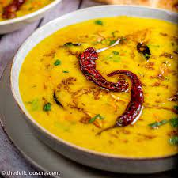

Gulab Jamun

Ingredients
- For Sugar Syrup:
- 2 cups sugar
- 5 cups wate
- 1 tsp milk
- 1/4 tsp cardamom seeds
- 1/4 tsp cardamom seeds
- 1/2 tsp cardamom powder
- For Gulab Jamun Balls
- 1 1/2 cups khoya, grated
- 1/2 tsp baking soda
- 1/2 cup maida
- 1 tsp milk
How to Make Gulab Jamun
Prepare Sugar Syrup:
1.Take required quantity of sugar and water in a deep pan. Stir and bring to boil on high flame for sugar to dissolve.
2.Now add milk and cardamom seeds to the sugar water. Boil further and strain.
3.Then add saffron and cardamom powder and bring the mixture to rolling boil for about 5-6 minutes until it becomes little sticky.
4.Make sure that the dough is a bit softer to avoid cracking of ball while deep frying.
5.Divide the dough into equal parts and make smooth surfaced balls out of it.
6.Now heat ghee in a pan over medium flame and add the Jamun balls to deep-fry them. Cook evenly until it becomes golden brown.
7.Make sure that you do not cook on high flame otherwise the balls will burn.
8.Now drain and let them cool for few minutes.
9.Then immerse the gulab jamuns in the warm sugar syrup for at least 30 minutes. It increases in size when it soaks the sugar syrup.
10.Hot and tasty sweet dish is ready to serve.
Dal

Ingredients
- 1 cup toor daal
- 1/2 cup chana dal
- 1/2 cup masoor dal
- 2 medium sliced onion
- 1 tablespoon crushed ginger
- 1 1/2 tablespoon crushed garlic
- 2 finely chopped green chilli
- 2 finely chopped tomato
- 1 teaspoon red chilli powder
- 1/2 teaspoon powdered turmeric
- 8 cup water
- 8 teaspoon ghee
- salt as required
- 1 teaspoon cumin seeds
- 2 crushed lightly dry red chili
- 2 pinches asafoetida
How to make Dal
step 1
Dal Recipe is a blend of delicious dal and spices. Here's how you can make it at home. Take a pressure cooker and fill it with 4 cups of water. Now, add toor dal, chana dal and masoor dal in water. Add salt in the cooker, close the lid and cook it on a medium flame for 5 whistles and then turn off the flame. Keep the cooker aside.
Step 2
the vegetables
Now take a non-stick pan and heat 4 tsp. ghee on a medium flame. Then add 1 tbsp chopped garlic and ginger. When garlic becomes light brown, add sliced onions. Add chopped green chilli.
Step 3
Add spices & cook until the vegetables until tender
Saute until onions are translucent. Add chopped tomatoes and season it with turmeric and red chilli powder. Cook until tomatoes become tender.
Step 4
Add cooked dal, water & let it simmer
Now open the lid of the cooker and add cooked dal in the pan. Also, add 2 cups of water and stir to mix well. Sprinkle salt and cook on a medium flame for 5 minutes. Let it cook and thicken.
Step 5
Prepare the tempering
Stir occasionally to check the consistency of dal, then remove from flame and carefully transfer it to a large bowl and keep it aside. Meanwhile, take a small pan, heat the remaining ghee on medium flame and add cumin seeds and crush two dry red chillies. Then add asafoetida and heat it for a few seconds.
Step 6
Pour the tempering over cooked dal & garnish before serving
Now pour the prepared tempering over cooked dal in the bowl. Garnish dal with chopped coriander leaves and remaining garlic. Serve while it’s hot.
Now your Dal is